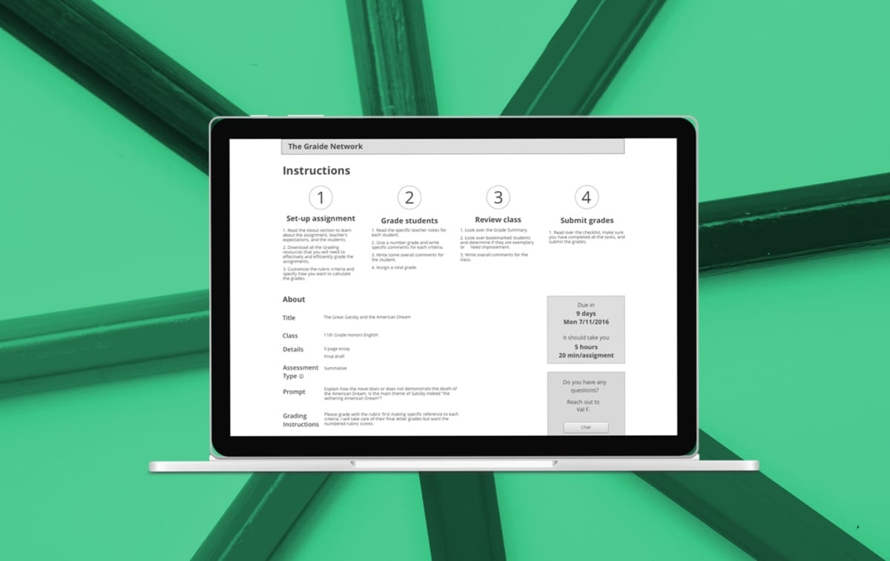
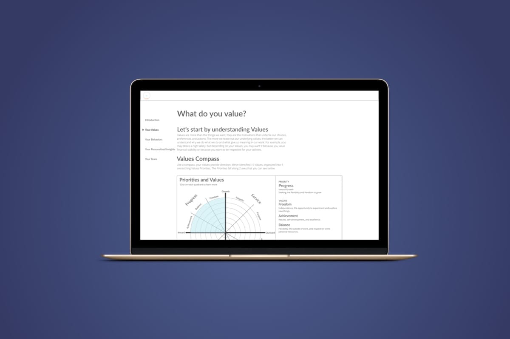

Work
How I identify problems and design solutions
The Graide Network
See the case
Teaching students how to be teachers
UX design
SVD Distribution
See the case
Connecting original video creators with commensurate compensation
UX design
Local Guide
See the case
Turning tourists into locals
UX/UI/Branding design
Forthcoming
noma
Making health data talk
UX/UI/IxD/Branding design
Be Curio
Forthcoming
Refining the user experience for a workplace behavior assessment
UX/UI/IxD design
About
Nate Chang
I’m a UX designer who approaches design with a background as informed by the humanities as working with my hands. Schooling in New York for history and English literature taught me how to analyze with empathy. Teaching myself leatherworking in Atlanta and starting a business instilled in me resourcefulness and sharpened my eye for design. My time at DESIGNATION in Chicago taught me innumerable skills. I embrace the constraints of medium, resources at hand, and diversity of human experiences to practice user-centered design thinking.
I’m always teaching myself new things, these days it’s bike repair and stepping up my coffee game. Get in touch if you want to talk design, food, bourbon (neat), the frustrating joys of vintage Mercedes-Benzes repair, or pop culture and social change.
nathanschang@gmail.com
Capabilities
- User Experience (UX) design
- Rapid prototyping
- Wireframing
- Interaction design (IxD)
- Content strategy
- Branding
- Visual design
- Usability testing
- Information Architecture
- User personas
- User interviews
- User flows
- Heuristic evaluation
- Competitive analysis
Tools
- Sketch
- Illustrator
- Photoshop
- Axure RP
- InVision
- Proto.io
- POP!
- Marvel
- HTML5
- CSS3
Experience
-
designation
Designer in Residence - UI/UX
Present
-
Never Been Better Co
Leatherworker
Accessories Designer
Present
-
Institute for Humane Studies
Data Quality Consultant, IT
-
Program Coordinator, Academic Programs
Education
-
Columbia University in the City of New York
B.A. English Literature; History